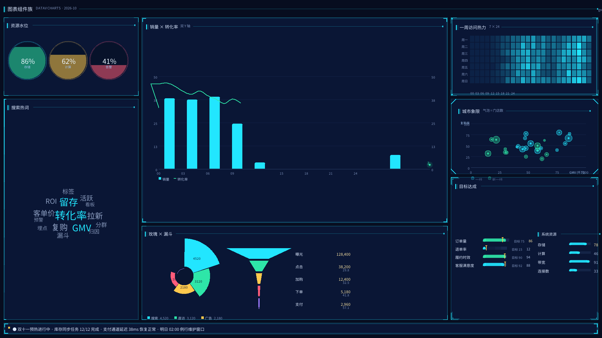
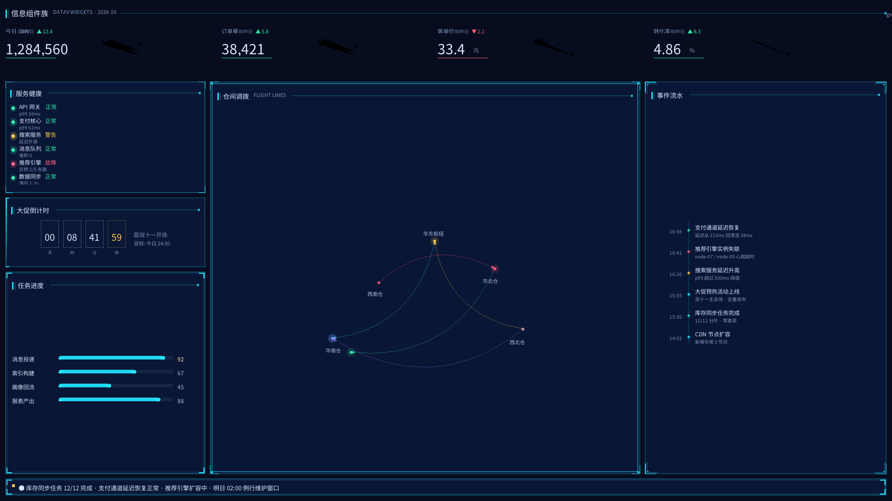

快速开始
gox install gx-datav
import { h, render, createSignal } from "gox";
import {
BorderBox, TitleBar, RingProgress, LineChart,
palette, seriesRandomWalk,
} from "gx-datav";
const [vals, setVals] = createSignal([78, 92, 64]);
render(
<window title="大屏" width={1280} height={720}>
<column width="100%" height="100%" background={palette.bg} padding={12} gap={10}>
<BorderBox type={1} width="100%" flexGrow={1}>
<TitleBar title="核心指标" align="left" fontSize={14}/>
<row flexGrow={1} justifyContent="space-around" alignItems="center">
<RingProgress value={() => vals()[0]} size={110} label="订单" sub="完成率"/>
<RingProgress value={() => vals()[1]} size={110} color={palette.ok} label="履约" sub="及时率"/>
</row>
</BorderBox>
</column>
</window>
);
// 数据变化即重绘：所有数据 prop 都接受 signal getter
setInterval(() => setVals([rnd(60, 99), rnd(70, 99), rnd(40, 95)]), 2000);响应式数据流
数据 prop 同时接受静态值与 signal getter。 getter 在每次 onDraw 时求值，读到的 signal 自动成为绘制依赖 —— 数据一变即重绘，不用手动调重画。
零依赖
不引任何第三方库。色板、数学、文本度量、绘制工具全部自带， 共约 5000 行 JS。
主题契约
theme.js 导出的是主题契约 —— 换肤只改这一个文件，
全部 29 个组件跟着变。
组件
点击任意组件查看截图、完整 props 说明。props 文档与源码注释同源， 由脚本自动生成，不会与实现脱节。
大屏示例
三个完整示例，全部确定性种子 —— 同一 seed 每次运行同一组数据，截图可复现。
examples/dashboard.js 全部组件齐上场的 1920×1080 大屏
examples/more-charts.js 水球 / 玫瑰 / 漏斗 / 子弹 / 散点 / 热力 / 组合 / 词云
examples/more-widgets.js KPI 卡 / 状态灯 / 倒计时 / 时间轴 / 飞线 / 进度条